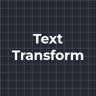
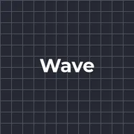
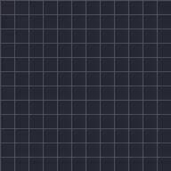

Трансформація тексту

Переміщує, масштабує, повертає, згасає та тонує літери, слова або рядки в межах діапазону. «Якір» визначає, чи масштаб і обертання беруться від кожного компонента, чи від центру шару. Зсувайте діапазон, щоб зміна поширювалася текстом.
Трансформація тексту пересуває, масштабує, повертає, робить напівпрозорими й підфарбовує літери, слова або рядки. Задайте, що має статися із зачепленими частинами (Позиція, Масштаб, Обертання, Непрозорість, Тонування), а потім анімуйте Зсув, щоб зміна пройшла крізь текст від початку до кінця. Пресети Wave і Spin Cascade — гарна відправна точка.
Налаштування
| Налаштування | Тип | Діапазон | Типово |
|---|---|---|---|
| Одиниця | Вибір | Символ, Слово, Рядок | Символ |
| Якір | Вибір | Компонент, Шар | Компонент |
| Початок | Число | від 0% до 100% | 0% |
| Кінець | Число | від 0% до 100% | 100% |
| Зсув | Число | від -200% до 200% | 0% |
| Форма | Вибір | Прямокутна, Наростання, Спадання, Трикутна, Округла, Плавна | Прямокутна |
| Плавність | Число | від 0% до 100% | 0% |
| Позиція | Точка (X, Y) | від -4000 px до 4000 px | 0 px, 0 px |
| Масштаб | Число | від 0% до 1000% | 100% |
| Обертання | Кут | від -3600° до 3600° | 0° |
| Непрозорість | Число | від 0% до 100% | 100% |
| Тонування | Колір | – | #FFFFFF, непрозорість 0% |
| Випадковий порядок | Увімкнено або вимкнено | – | Вимкнено |
| Зерно | Число | від 0 до 1000 | 1 |
Пресети
Виберіть один зі сторінки ефекту в Бібліотеці ефектів. Кожен із них — готове налаштування, яке можна й далі змінювати.

Хвиля
Каскад обертання